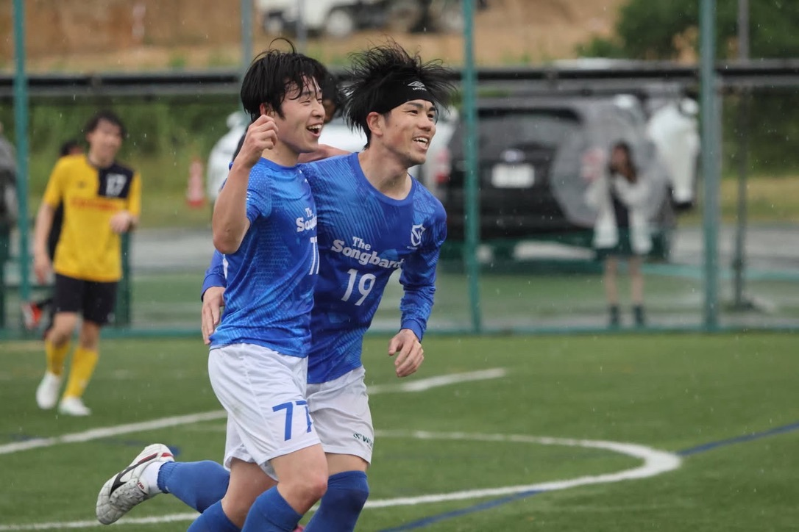

神戸市リーグ所属 ／ 社会人サッカーチームSCROLL TO EXPLORE ↓


ABOUT THE CLUB
サッカーも、
仲間との時間も、大切に。
FCカスティーニオは、神戸市リーグに所属する社会人サッカーチームです。
楽しく真剣にプレーすること。チームメイトとのコミュニケーションを大切にすること。この思いを胸に、神戸で活動しています。
活動地域神戸市内
活動日土日
活動頻度週1回程度

FCカスティーニオは、神戸市リーグに所属する社会人サッカーチームです。
楽しく真剣にプレーすること。チームメイトとのコミュニケーションを大切にすること。この思いを胸に、神戸で活動しています。